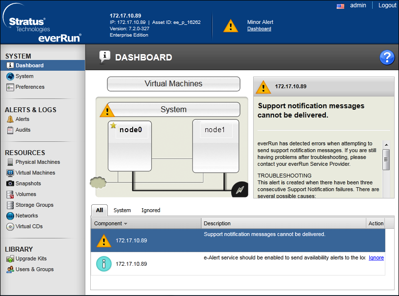
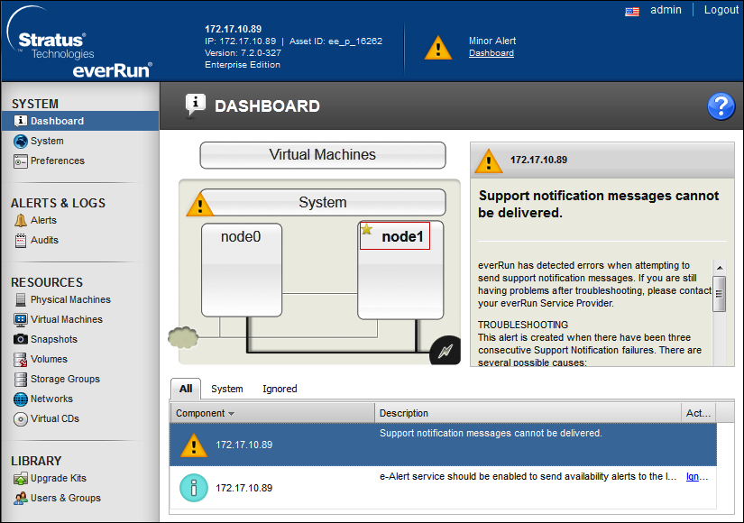
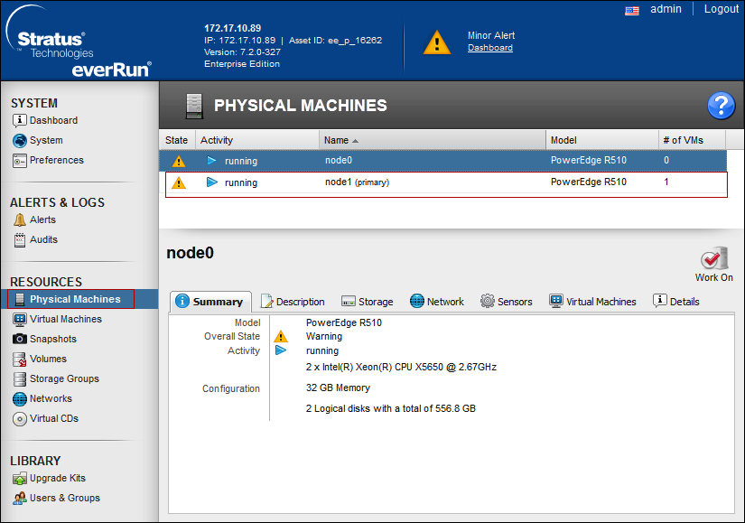

Verify Before Notification System Installation
- Virtual Machines are created and protected with everRun 7.2.
- Connect to the protected Virtual Machine via remote desktop.
- Open a browser in the client machine and start streaming a video.
- While the video is being played, forcibly bring down one of the servers, for example, node0 by pulling the plug.
NOTE: Bring down the server on which the currently active compute instance of the protected Virtual Machine is running so that a transition occurs. 
- The remote desktop connection to the protected Virtual Machine is not lost and the video continues to stream. The star icon is shifted to node1 making node1 as the primary physical machine.

- Select Physical Machines to verify that node1 is the primary physical machine.
